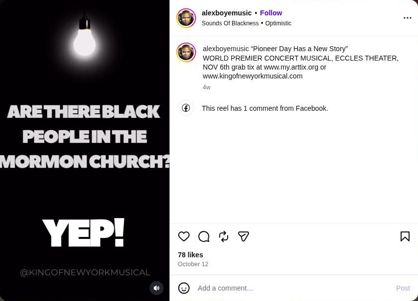

1 · The evidence
Everything here can be checked from the links. Social-media items are marked as claims.
venue What the Eccles listed
| Listing | "Live at the Eccles" presents Alex Boyé, "King of New York": https://www.saltlakecountyarts.org/events/alex-boye/ |
|---|---|
| Date and time | Friday, November 6, 2026, 7:30 pm (doors 6:30 pm). On sale from June 26, 2026. |
| Room | Delta Hall at the Eccles Theater: about 2,500 seats per Salt Lake County's venue page. |
| Credits listed | Directed by Blake Sharette; music by the "Dreamspire Orchestra". A VIP package (priority seating, Q&A with Boyé) was offered. |
| Status shown | No "cancelled", "postponed" or "sold out" notice as of November 11, 2026. |
claim What the show's accounts posted

| Oct 12 · alexboyemusic | "'Pioneer Day Has a New Story' WORLD PREMIER CONCERT MUSICAL, ECCLES THEATER, NOV 6th grab tix at www.my.arttix.org or www.kingofnewyorkmusical.com" (DeZs9fSBurs, 78 likes) |
|---|---|
| About Nov 5 · latterdaysouljahz | "Alex Boye and the King of New York Musical… Tomorrow night Eccles Theater 7:30 pm!" Video of a rehearsal room. (DfYkCDnsN9e, 231 likes) |
| About Nov 9 · kingofnewyorkmusical | Two posts of guests in front of a "King of New York" backdrop, captioned "'World Premier' Gallery / Thanks for coming!", location tagged Eccles Theater. (Dffn74OgTWx, 22 likes; DffmBPQAiaK, 31 likes) |
A backdrop and a location tag do not by themselves show that a performance took place in Delta Hall, or how many people came. The gallery posts show private guests, so they are linked here rather than reproduced.
missing What we could not find
- The ticket website Boyé advertised does not load.
kingofnewyorkmusical.com, given in the October 12 post above, returned "name not found" on two checks on November 11, 2026 (the second at 11:05 am Pacific). - No review or news report of the November 6 performance turned up in a web search on November 11.
- No attendance or ticket figures are public.
What we are asking
- Did the performance go ahead on November 6 as scheduled?
- Was it presented by Live at the Eccles, or was Delta Hall rented by an outside producer? If rented, by whom?
- Was the full hall on sale, or was seating limited?
- How many tickets were issued, and how many were complimentary?
Compiled November 11, 2026. Part of King of New York at the Eccles. Work in progress; corrections welcome.